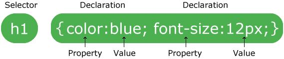

Основы CSS
БЭМ нотация
.block-name__element-name--mod-name
Введение
CSS предназначен для стилизации html-документа.
Стили подключаются к html-документу при помощи<link rel="stylesheet" type="text/css" href="ссылка на файл-стилей">c

Селектор
Селектор по тегу (img)
Селектор по идентификатору (#id)
Селектор по классу(.class)
Селектор по наличию нескольких классов (.class1.class2)
Селектор "всё" (*)
Селектор вложенности (parent child)
Селектор прямого потомка (parent>child)
Селектор "следующий" (+)
Селектор "следующие" (~)
Селектор по атрибуту ([attr], [attr="value"], [attr^="value"], [attr$="value"], [attr*="value"], [attr~="value"], [attr|="value"])
Без селекторов
| style |
1000 |
| #id |
0100 |
| .class |
0010 |
| [attr] |
0010 |
| TAG |
0001 |
| * |
0000 |
#id .class[disabled] a = 0121
Псевдокласссы
Псевдоэлементы
Свойства в теле селектора
Еденицы измерения
Позиционирование (absolute, relative, static)
Поведение(display:block | inline-block | inline | flex | grid)
Отступы (padding, margin)
Бордер/Обводка
Фон
Тень
Шрифты
Анимация / переходы
Респонсив
Адаптив
Полезные сервисы
https://cssreference.io/property/font-size/ (Интерактивный справочник свойств)
http://htmlbook.ru/css (Справочник)
https://www.w3schools.com/ (Справочник)
https://css-tricks.com/ (Справочник + часто встречающиеся решения)
https://caniuse.com/ (Сервис позволяющий проверить на кроссбраузерность какое либо свойство css)